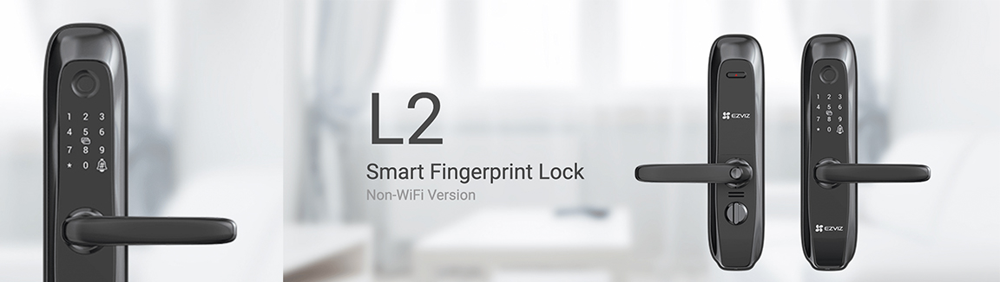
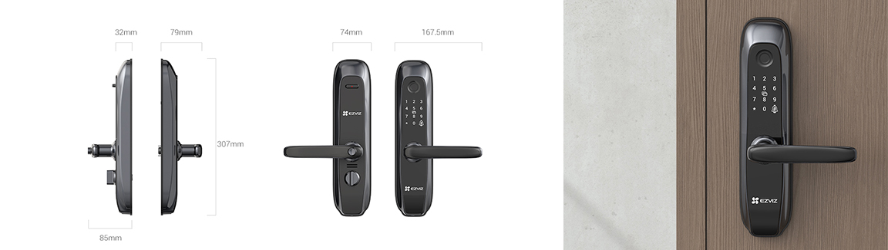
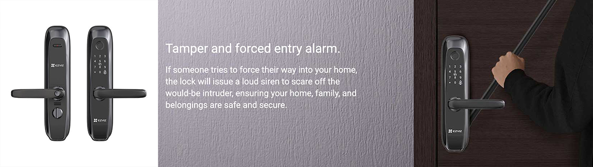

Serrure intelligente L2S : Révolutionnant la Sécurité Domestique au Maroc
La sécurité à domicile a atteint de nouveaux sommets avec l'avènement de la serrure intelligente SmartLock L2S. Dans cet article, nous explorons les fonctionnalités, les avantages et l'impact de cette technologie innovante sur les foyers marocains. En tant que rédacteur SEO chevronné, je vais guider nos lecteurs à travers les aspects clés de la serrure intelligente SmartLock L2S, répondant ainsi à la demande croissante au Maroc.
Caractéristiques Clés de SmartLock L2S
Installer SmartLock L2S est un jeu d'enfant, en faisant un choix idéal pour les propriétaires cherchant des solutions de sécurité sans tracas. Cette serrure intelligente propose des fonctionnalités de sécurité avancées, y compris la reconnaissance biométrique et la surveillance en temps réel. Son intégration transparente avec les systèmes domotiques garantit une expérience de vie cohérente et interconnectée. L'interface conviviale ajoute une couche supplémentaire de commodité, permettant aux utilisateurs de gérer leurs paramètres de sécurité avec facilité.
Serrure Intelligente Maroc : Une Tendance Croissante
Le paysage marocain connaît une montée en flèche de l'adoption des serrures intelligentes, et pour de bonnes raisons. SmartLock L2S offre un niveau de sécurité inégalé, répondant aux besoins uniques des foyers marocains. La commodité et la tranquillité d'esprit qui accompagnent une serrure intelligente contribuent à sa popularité croissante dans la région.
Ezviz Serrure : Un Regard Approfondi
Ezviz, une marque renommée dans l'industrie de la maison connectée, présente sa propre gamme de serrures intelligentes, y compris l'innovante Ezviz Serrure. Cette section donne un aperçu de la marque et met en avant les fonctionnalités distinctives qui distinguent les serrures intelligentes Ezviz sur le marché.
Serrure Intelligente Ezviz : Alliance d'Innovation et de Sécurité
Ezviz Serrure porte la notion de serrures intelligentes à de nouveaux sommets en mêlant habilement l'innovation à la sécurité. Les témoignages et les avis d'utilisateurs éclairent sur les expériences réelles de ceux qui ont adopté cette technologie de pointe.
Serrure Intelligente Maroc Prix : Accessibilité et Valeur
Une des considérations clés pour les consommateurs marocains est le prix des serrures intelligentes. Dans cette section, nous décomposons le coût de SmartLock L2S sur le marché marocain, mettant en évidence la valeur qu'elle apporte en termes de sécurité et de commodité.
Processus d'Installation : Simplifier la Sécurité
Craignez-vous la complexité de l'installation d'une serrure intelligente ? Ne craignez rien. Cette section fournit un guide étape par étape pour installer SmartLock L2S, abordant les préoccupations courantes et assurant un processus de configuration fluide.
Serrure Porte Intelligente Maroc : Renforcer la Sécurité à Domicile
Les serrures intelligentes, telles que Serrure Intelligente L2S, jouent un rôle crucial dans le renforcement de la sécurité des portes dans les foyers marocains. Cette section explore les avantages de l'utilisation d'une serrure intelligente sur les portes et son intégration avec les systèmes de sécurité existants.
Expérience Utilisateur : Sans Couture et Intuitive
La satisfaction de l'utilisateur est au cœur de SmartLock L2S. Les histoires et expériences personnelles partagées par les utilisateurs mettent en lumière la nature sans couture et intuitive de cette serrure intelligente, en en faisant un choix convivial pour tous.
Serrure Empreinte Digitale : Sécurité Biométrique
La technologie de reconnaissance d'empreintes digitales prend le devant de la scène dans cette section, montrant comment la biométrie élève les normes de sécurité de SmartLock L2S. La fiabilité et la précision de la reconnaissance des empreintes digitales ajoutent une couche supplémentaire de protection aux foyers. 
Serrure Digitale vs Serrure Traditionnelle : Une Comparaison
Les serrures traditionnelles appartiennent au passé. Cette section compare les serrures intelligentes digitales à leurs homologues traditionnelles, mettant en évidence les avantages d'adopter des solutions de sécurité modernes qui s'alignent sur les modes de vie contemporains.
Serrure Porte Maroc : Répondre aux Besoins Locaux
Comprendre les subtilités de l'architecture marocaine et des types de portes est crucial. SmartLock L2S répond aux besoins locaux en offrant des personnalisations qui s'alignent sur les préférences et les structures trouvées au Maroc.
Entretien de SmartLock L2S : Longévité et Durabilité
Investir dans une serrure intelligente ne concerne pas seulement la sécurité ; il s'agit de longévité et de durabilité. Cette section offre des conseils pratiques pour entretenir SmartLock L2S et explore la garantie et les services de support offerts par le fabricant.
Serrure De Porte Intelligente : Tendances Futures au Maroc
Que réserve l'avenir pour les serrures intelligentes au Maroc ? Cette section explore les technologies émergentes dans l'industrie des serrures intelligentes et anticipe les développements qui façonneront l'avenir de la sécurité domestique dans la région.
Conclusion
En conclusion, SmartLock L2S se positionne comme une solution révolutionnaire pour la sécurité à domicile au Maroc. Ses fonctionnalités avancées, son interface conviviale et son intégration transparente avec les systèmes domotiques en font un choix de premier ordre pour ceux qui recherchent une serrure intelligente fiable et innovante.